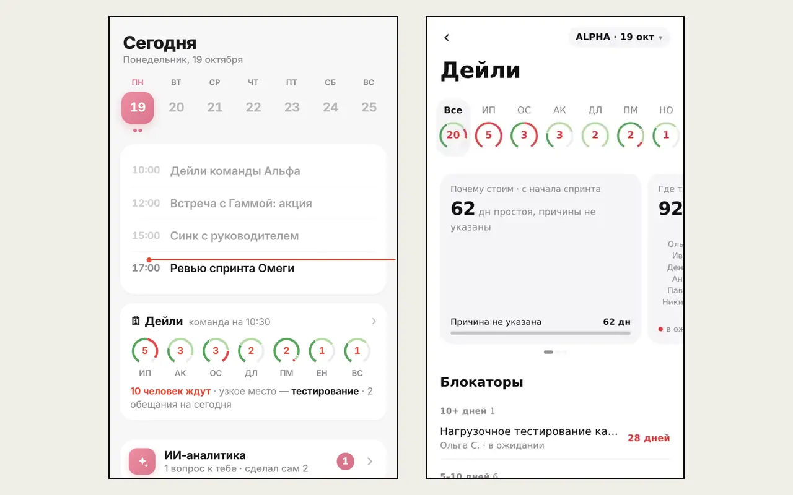

Утро PO,
которое собирается само
Лента, отчёты команд, спринт и обещания — к 10:30 всё уже на столе.
Не обходить чаты и Jira,
а начинать день с решений.
ЧАСТЬ 2 · 08:40
Отчёт
по командам
PDF приходит в Инбокс до дейли. На дейли — мини-приложение: кто застрял и почему.



PDF и «Дейли»: 8 экранов
01 / 08Страница 1Что делать сегодня
ЧАСТЬ 3 · КАЖДЫЙ ДЕНЬ
Отчёт
по спринту
Одни данные — свой формат техлиду, PO и бизнесу.


Формат для техлида и PO
- Первый экран — успеваем ли спринт: сделано, прогноз к концу, блокаторы
- «✋ Блокаторы» — первыми, по дням; тап по строке — комментарий ИИ-агенту
- Инициативы полосой: готово, в работе, блок; «весь эпик» — сгорание и прогноз
- Меню ☰: команды, выработка, Lead time, интерпретация ИИ, Logs
Формат для бизнеса

- Итог по целям квартала: результат спринта и прогресс инициативы
- Операционный отчёт и участники — на тех же данных, что отчёт PO
- Инициативы по спринтам — роадмап до конца квартала
- «Риски и проблемы» — только то, где нужна реакция других команд
Риски квартала: синк с CPO
- Шанс каждой инициативы дойти к концу квартала — Monte Carlo по темпу последних недель
- «Нужно решение»: просьба, у кого, к какой дате и что будет, если нет
- Эскалации поднимаются только с ✅ PO
- Сравнение с прошлым понедельником: чей прогноз сдвинулся позже
Отчёт PO: 10 экранов
01 / 10Главный экранУспеваем ли спринт: сделано, прогноз, блокаторы
«ФАКТ» и риски: 10 экранов

01 / 10ТитулЗакрыто, SP и блокеры по каждой команде